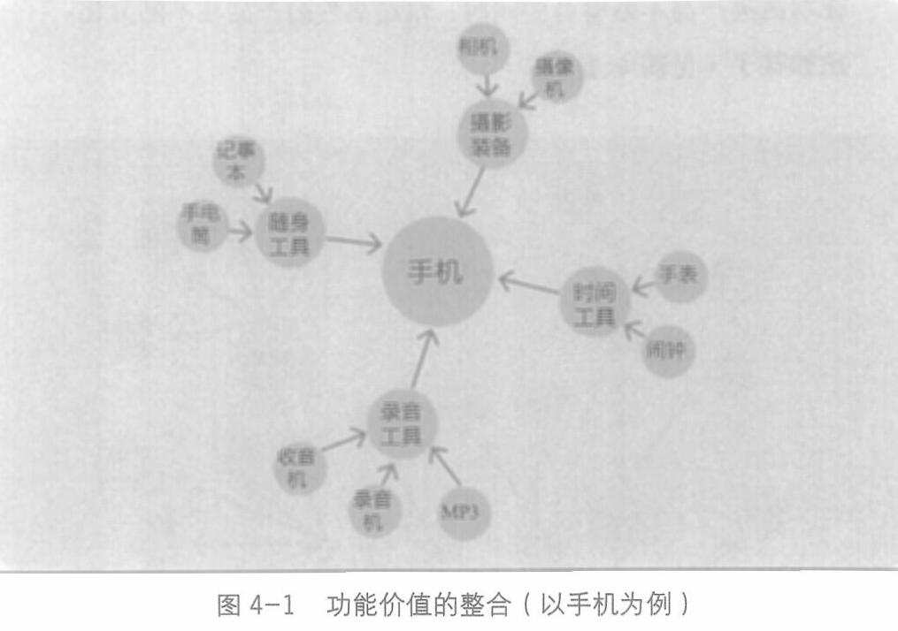

第四章 产品创新——价值组合

人们一般对工具是没有感情的，总是希望越方便越好、越便宜越好，所以性价比与高频，一定是功能类产品最大的杀器。
超高频的功能类产品吃下各类低频的功能，让它们成为自己的一部分，增强自己的竞争力，几乎是竞争的必然结果。
在过去10年互联网高频打低频的竞争策略里，这一幕屡见不鲜。
比如今日头条和微博，吃掉了所有垂直门户网站和垂直论坛； 而垂直电商如果不能进化成有行业纵深的供应链，只是想做点信息对称的生意，则或者被综合电商吃掉，或者被搜索引擎吃掉。比如，美团会吃掉所有的020(线上到线下)平台。
其他功能类产品同样逃不掉这种命运。比如洗衣、柔顺、保养三合一的产品吃掉了传统的洗衣液； 杀虫、松土、施肥三合一的产品吃掉了传统的杀虫剂。
075